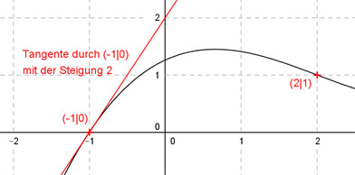

Aufgabe 77 Der Graph einer ganzrationalen Funktion 3. Grades hat bei (2|1) einen Wendepunkt und im Punkt (-1|0) die Steigung 2. Wie lautet seine Funktionsgleichung?  Allgemeine Form einer ganzrationalen Funktion 3. Grades: f(x) = ax3 + bx2 + cx + d f’(x) = 3ax2 + 2bx + c f’’(x) = 6ax + 2b 4 Bedingungen: 1. Hat bei (2|1) einen Wendepunkt bedeutet zum einen: f(2) = 1 --> a * 23 + b * 22 + c * 2 + d = 1 --> 8a + 4b + 2c + d = 1 I 2. Hat bei (2|1) einen Wendepunkt bedeutet zum anderen: f’’(2) = 0 --> 6a * 2 + 2b = 0 --> 12a + 2b = 0 II 3. Hat im Punkt (-1|0) die Steigung 2 bedeutet zum einen: f(-1) = 0 --> a * (-1)3 + b * (-1)2 + c * (-1) + d = 0 --> -a + b - c + d = 0 III 4. Hat im Punkt (-1|0) die Steigung 2 bedeutet zum anderen: f’(-1) = 2 --> 3a * (-1)2 + 2b * (-1) + c = 2 --> 3a - 2b + c = 2 IV I + III * (-1) 8a + 4b + 2c + d = 1 a - b + c - d = 0 --------------------- 9a + 3b + 3c = 1 V IV * (-3) + V -9a + 6b - 3c = -6 9a + 3b + 3c = 1 ------------------- 9b = -5 |:9 b = -5/9 b = -5/9 in II eingesetzt: 12a + 2 * (- 5/9) = 0 12a - 10/9 = 0 |+10/9 12a = 10/9 |:12 10 a = --------- = 5/54 9 * 12 a = 5/54 und b = -5/9 in IV eingesetzt: 3 * 5/54 - 2 * (-5/9) + c = 2 5/18 + 10/9 + c = 2 5/18 + 20/18 + c = 2 25/18 + c = 2 |-25/18 c = 36/18 - 25/18 = 11/18 a = 5/54 und b = -5/9 und c = 11/18 in III eingesetzt: -5/54 - 5/9 - 11/18 + d = 0 -5/54 - 30/54 - 33/54 + d = 0 - 68/54 + d = 0 |+68/54 d = 68/54 = 34/27 Gesuchte Funktionsgleichung: f(x) = (5/54)x3 - (5/9)x2 + (11/18)x + 34/27